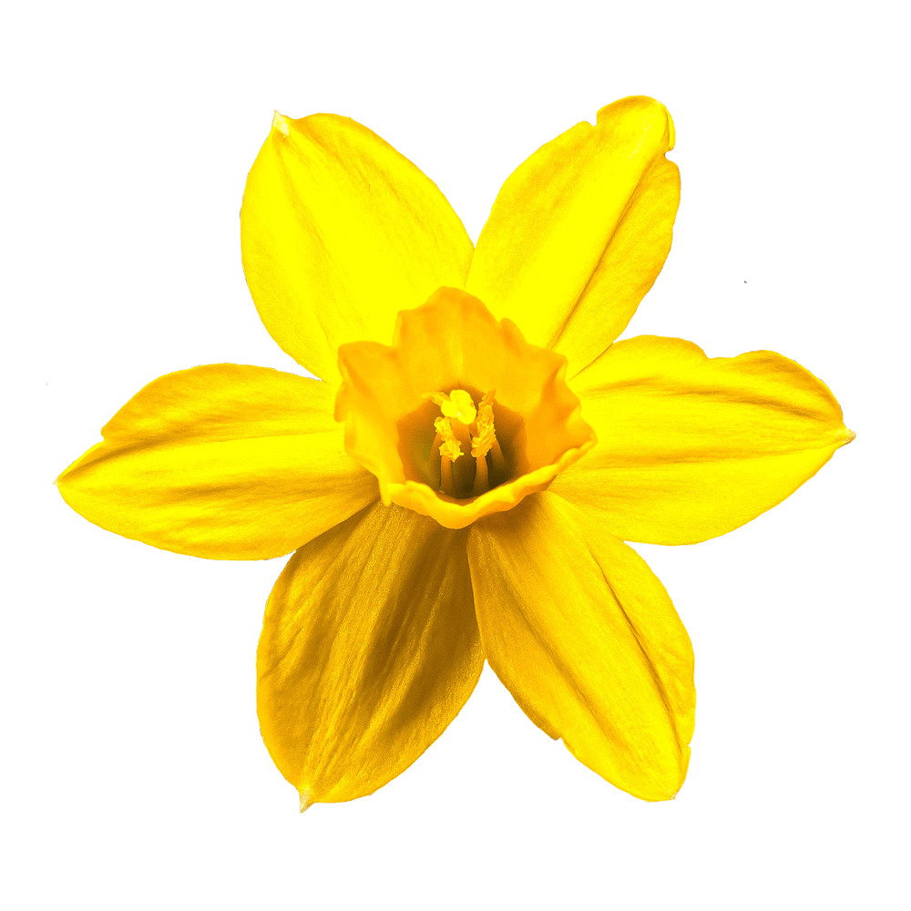

DM Serif Text is a lower-contrast counterpart to the high-contrast DM Serif Display. While the serifs remain delicate, the DM Serif Text family is a more robust variant of the Display sibling, intended for smaller sub-headings and text sizes.
The DM Serif project was commissoned by Google from Colophon, an international and award-winning type foundry based in London and Los Angeles, who publish and distribute high-quality retail and custom typefaces for analog and digital media.
Font available from Google Fonts.
Daffodils produce smooth stems with buds that open out into fabulous trumpet-shaped flowers. The plant is named after the vain hunter in Greek mythology, Narcissus.
There are 88 different types of Daffodil in twelve categories. They’re all descended from the wild Daffodil which grows in the Northern Hemisphere.
The Daffodil is the national plant of Wales. Soldiers wore it on their hats in the early Middle Ages in order to be able to differentiate one another from the enemy. The flower grows and blooms profusely in the wild in Wales.
Symbolizing rebirth and new beginnings, the daffodil is virtually synonymous with spring.